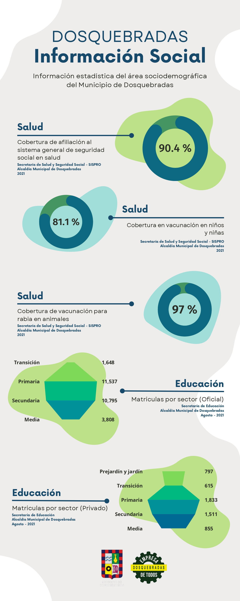
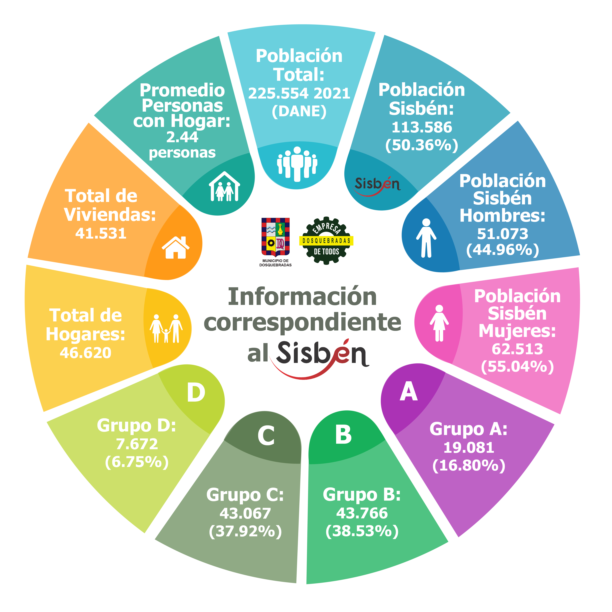

Alcaldia de Dosquebradas
Plan desarrollo
Rendición cuentas
Banco proyectos
Políticas públicas
POT
Biblioteca digital
Estadística
Secretaría de planeación municipal
Información estadística | SOCIODEMOGRAFICA
Ingresar al repositorio completo de documentos estadisticos

Dosquebradas, información social 2022

Dosquebradas, información SISBEN 2022
Ingresar al repositorio completo de documentos estadisticos